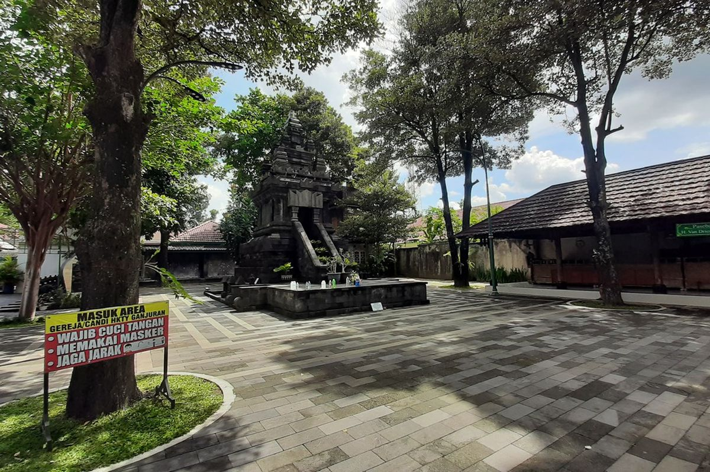
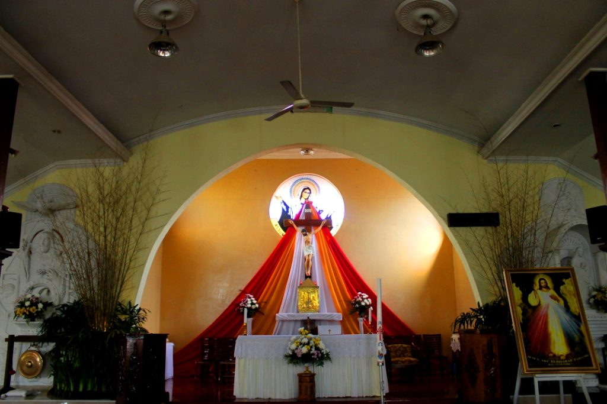

Dalam pelajaran agama, saya belajar tentang pewartaan Yesus tentang Kerajaan Allah dan konsekuensi yang Ia mendapat karena pelayanan dan pewartaannya.
Gereja Katolik Hati Kudus Yesus Ganjuran
Gereja Katolik Hati Kudus Yesus Ganjuran adalah salah satu gereja yang saya kunjungi bersama teman-teman dan guru saya, Gereja ini unik karena desainnya yang sangat terbuka, selain gereja, di gereja ini juga ada toko seperti toko barang-barang Katolik. Toko ini dibuat sebagai sumber uang bagi panti asuhan. Gereja ini cukup berbeda dari gereja Laurensius di sekolah kami karena desainnya dan gedungnya. Di gereja kami, ada 1 gedung besar untuk gereja. Di Gereja Hati Kudus Yesus ini, ada banyak ruang-ruang kecil yang dibagi untuk fungsi berbeda-beda, seperti untuk pengakuan dosa dan kapel tersendiri.

Gereja Maria Assumpta Pakem
Gereja ini cukup menarik, dari luar kelihatan seperti gereja biasa, tetapi di dalamnya, ada sumur yang berisi air suci. Kami dapat mengambil air suci dari sumur tersebut dan bawa pulang. Selain itu, gereja ini juga ternyata sangat luas. Ruang utamanya untuk misa biasa sudah cukup luas, tetapi di sampingnya ada gua Maria dan tempat berdoa pribadi yang mempunyai ukuran sama.
